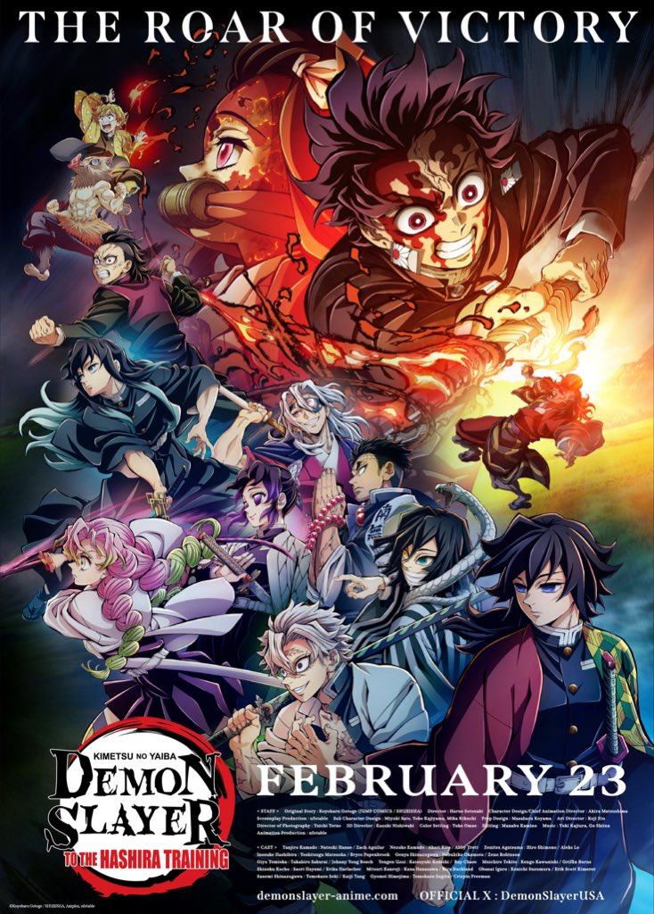
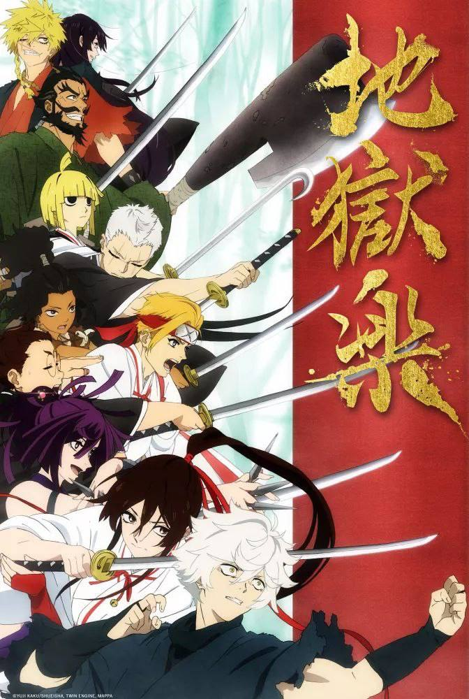

<!doctype html>
<html>
<head>
<meta charset="utf-8">
<title>animation digital network.fr/vostr</title>
<link rel="stylesheet" href="style.css"/>
<style>
      ul {
          list-style-type: none;
          margin:  0;
          padding: 0;
          background-color: #333;
          overflow: hidden;
          }
          li {
              float : right ;
            }
          li a {
                display: block;
                color: red;
                text-align: center;
                padding: 14px 16px;
                text-decoration: none;
              }
              
              li a:hove {
                background-color:#111;
              }
  </style>
    <style>
     .anime{
          
             }
  </style>                           
</head>
   <body>
         
    
        </main>
    </body>
</html>     
        <ul>
             <li><a href="html5.html">s'inscrire</a></li>
   
             <li><a href="s'aboner.html">s'abonner</a></li>
             <li><a href="html2.html">catalogue</a></li>
             </ul>
             
   <header>
   <h1>series mangas</h1>
   </header>
   
    
        
	 <header>
    <h2><ins>gratuits</ins></h2>
        </header>
        <header>
    <h2>serie adaptees de manga</h2>
        </header>
         <h4>
      <p>
        
        
        
        
        
        
        
             </p>
            
      </h4>
   
        <main>
      <h3> le site francais au sevice du stream d'anime en vostfr et vf.</h3>
      
       <h3>quels genre d'anime propose ce site?</h3>     
<h5>ce site propose un très large choix d’animés en ligne, disponible en quelques clics seulement. Le manga s’étant aujourd’hui largement démocratisé, c’est ainsi que coexiste une multitude de genres et de sous-genres. Retrouvez, par exemple, le shônen, le fer de lance de l’animation japonaise. Le shôjo quant à lui, vise un public plus féminin. Vous retrouverez également les indémodables mangas de sport, comme Hajime no Ippo ou Ashita no Joe 2, dont le côté initiatique fonctionne toujours à merveille. Mais les animes, c’est aussi une bonne dose d’humour et de bonne humeur, avec le très original Assassination Classroom, par exemple.
Il existe aussi des animes orientés pour les plus jeunes. Ils représentent une très bonne porte d’entrée dans le monde des animes en streaming. Vous l’aurez compris, il y en a pour tous les goûts sur ce site.

Quelles sont les possibilités de paramétrage qu'offrent ADN pour les séries et les films disponibles en streaming ?
Pour une expérience réussie, vous pouvez paramétrer précisément de nombreux critères. Vous retrouverez vos animés répartis en 3 catégories : simulcast, téléchargement ou visionnage gratuit.
Choisissez la langue qui vous convient entre animés en VOSTFR ou en VF. Ceux-ci sont disponibles en HD, avec comme qualité 720p et 1080p.
Évidemment, l’expérience de ce site est complètement personnalisable. Créez ainsi vos propres watchlist, séries coups de cœur et déposez votre avis ou commentaire concernant les séries de votre choix. Plusieurs types d’abonnements sont disponibles selon vos envies, chacun multi-supports.

Quelles sont les têtes d’affiche d'animés en streaming sur ce site ?
ce site propose quelques-uns des animes incontournables de notre époque et d’avant. Quel que soit le genre, vous retrouverez un certain nombre de classiques. Envie d’un shônen de qualité ? Naruto Shippuden, Boruto et One piece en streaming vous attendent sur notre site. ce site, ce sont aussi des oeuvres certes plus anciennes, mais toujours aussi indémodables telles que Akira, Albator, Cobra, Lady Oscar et bien d’autres...
ce site propose également des nouveautés incontournables telles que Call of the Night, Eminence in Shadow ou encore My Isekai Life.
Si vous avez une question concernant notre offre, n’hésitez pas à prendre contact avec nous via notre site web, nous nous ferons un plaisir de vous répondre.
</h5>
<h6
        
    <!-- Pide de page-->
    
      Des questions ? Contactez-nous au 696008542
      <div class="colonnes">
          <div class="colonne">
              <p> SÉRIES LES PLUS POPULAIRES</p>
              <p>Dragon ball Z</p>
              <p>Dragon ball Super</p>
              <p>Fairy tel</p>
              <p>SAO</p>
          </div>
          <div class="colonne">
              <p>  NAVIGATION</p>
              <p>mon profil</p>
              <p>Entreprise mondiale</p>
              <p>Chiffre d'affaire</p>
          </div>

          <div class="colonne">
              <p>FAQ</p>
              <p>Recrutement</p>
              <p>Conditions d'utilisation</p>
              <p>Nous contacter</p>
          </div>
          <div class="colonne">
              <p> LÉGAL</p>
              <p>Conditions générales de vente</p>
              <p>Charte pour la protection des données personnelles</p>
              <p>Mentions Légales</p>
              <p>Paramètres des cookies</p>
          </div>
         

      </div>
      <p>bryan , Japon</p>
  
  </h6> 
</main>
</body>
</html>
    
        
  
